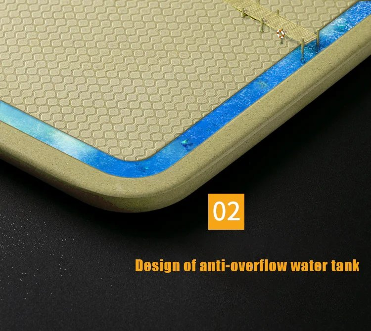
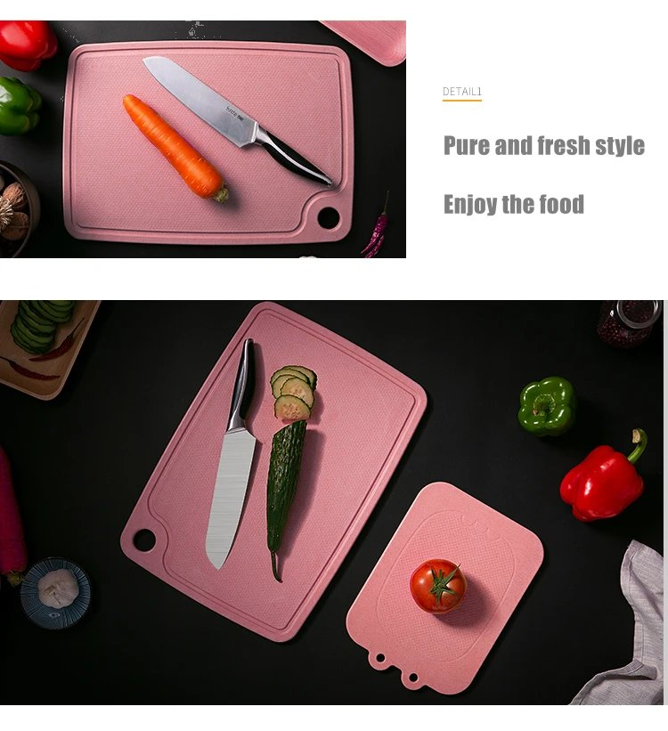

Stable anti-slip base · continuous ring
A rice husk board with a continuous silicone ring moulded into the underside. The ring grips the worktop around the full perimeter so the board stays put during forceful cutting. Available in natural colour or matched to your Pantone shade, with juice groove and hanging hole as standard.
| Material | Rice husk fibre + food-grade starch binder |
|---|---|
| Grip Type | Continuous anti-slip silicone ring on the underside |
| Sizes | 460 × 340 × 8.5 mm | 400 × 280 × 8.5 mm | 300 × 230 × 8.5 mm |
| Colour | Natural rice-husk colour or custom Pantone matching |
| MOQ | 500 pcs per colour per size (minimum 2 colours per order) |
| Standard Features | Juice groove · hanging hole · high-density surface |
| Packaging | Kraft paper box with custom logo and artwork (OEM) |
| Certification | SGS-tested food-contact material; LFGB / REACH statements available |
Unlike corner pads, a continuous ring resists movement along every edge — useful for boards that see firm, repeated cutting.
The silicone ring sits slightly proud of the board's underside, creating friction against the worktop along the full perimeter. That keeps the board from creeping or rotating as you cut, which matters both in a commercial kitchen and on a domestic worktop. The ring is fitted during moulding, so it is a permanent part of the board rather than a loose add-on.
Both boards use the same rice husk body and the same sizes. The ring version offers continuous perimeter grip; the anti-slip-dot version uses four short curved silicone bars at the back corners. If you are unsure which to list, we can send photos and samples of both so your team can compare them directly.
Compare Anti-Slip Dots
Pantone colour matching, logo moulding or printing, and a custom kraft box. Coloured samples in 2–3 weeks, with third-party inspection welcome.
See All Customisation OptionsTell us the sizes, colours and quantity. We will send the spec sheet, MOQ and sample photos.